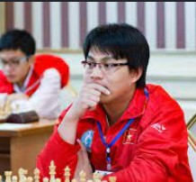
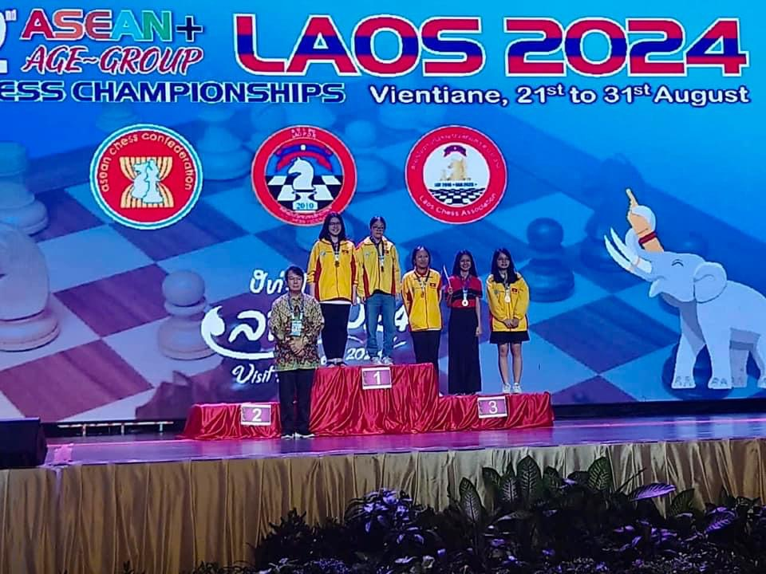
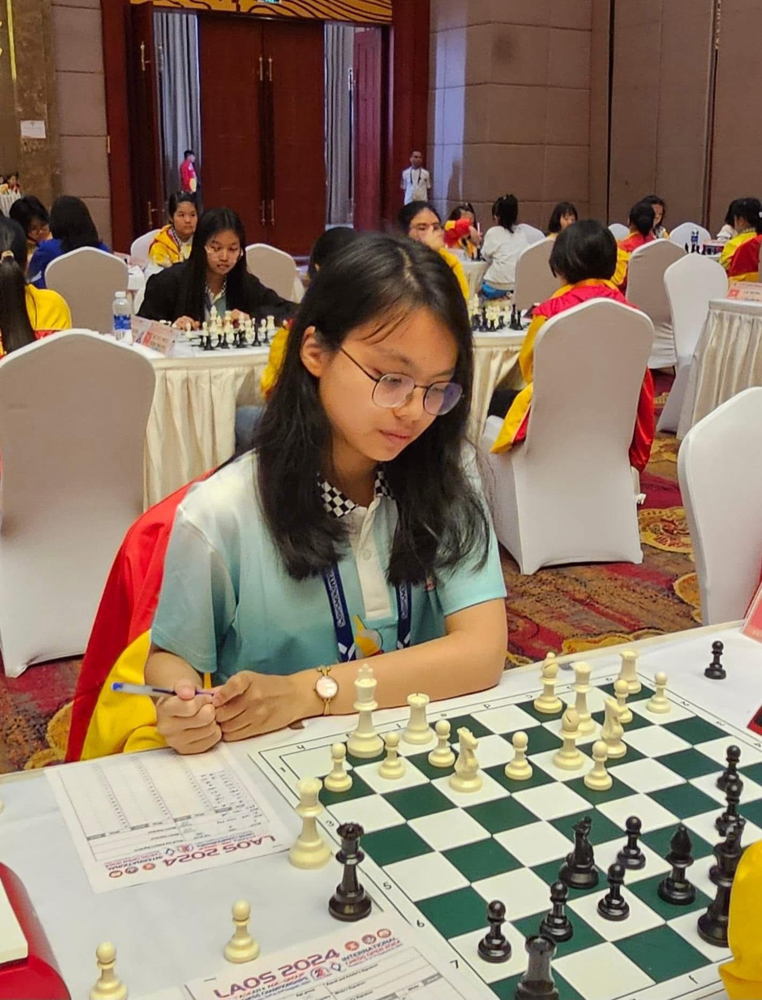

For years, I believed chess was my identity.
Every victory made me feel confident. Every loss made me question myself. I once believed that without chess, I had little to offer.
2015 — Where It Began
In 2015, I first learned how the pieces move. Six months later, I competed in my first national championship and earned a place on Ho Chi Minh City's chess team.
What began as a childhood hobby became the foundation of who I would become.
"Having coached My since she was eleven, what impressed me most was never just her results, but her approach to improvement. Even as a young player, she could replay her entire games from memory, and carefully analyse every critical move after each match. I still remember one tournament when she chose to spend her only day off preparing for one rapid game instead of going out with her teammates. More than natural talent, it was her discipline, curiosity, and determination to keep learning that shaped her into the player she is today."
— Grandmaster Nguyen Huynh Minh Huy, Chess Coach


2015 — First national medal

2016 - First international tournament

2018 - Asian Youth Chess Championship

2020 - City-level Chess Champion

2022 - Competing during Covid-19

2023 - Continue Representing Vietnam

2024 - National Youth Chess Championship
One of the most defining moments was at the 22nd Youth Southeast Asia Chess Championship. After nearly a year of preparation, it was the tournament I had placed the highest expectations on. I performed well throughout, but lost the decisive final game. At the time, it felt as if everything I had worked for disappeared after a single move.
Yet my family, coaches, and teammates reminded me that one result could never define my worth. For the first time, I realised that confidence is not built by winning every game, but by believing in myself even after losing one.
From then on, I began separating my self-worth from my results. I no longer played simply to chase medals, but for the genuine love for the game. And this became my most meaningful victory.


Looking back, I realise that chess was never my identity. It was just the first step in discovering who I could become. Chess taught me resilience after failure, creativity under pressure, and the courage to create opportunities not only for myself, but also for others.
These lessons gradually extended beyond the chessboard — into the communities I served, the initiatives I created, and the impact I hope to make in the future.
This portfolio tells the story of that journey.
Click each piece to discover its story.